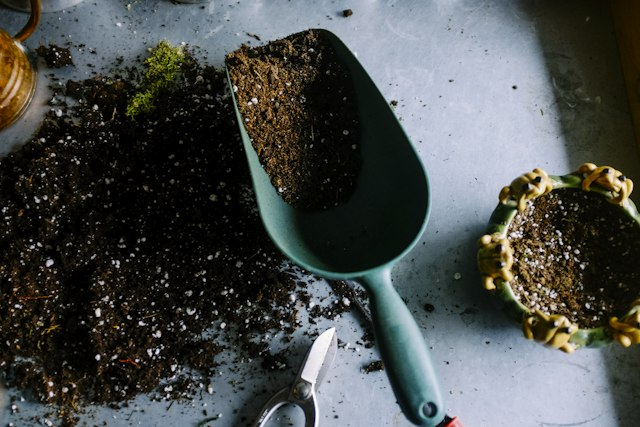
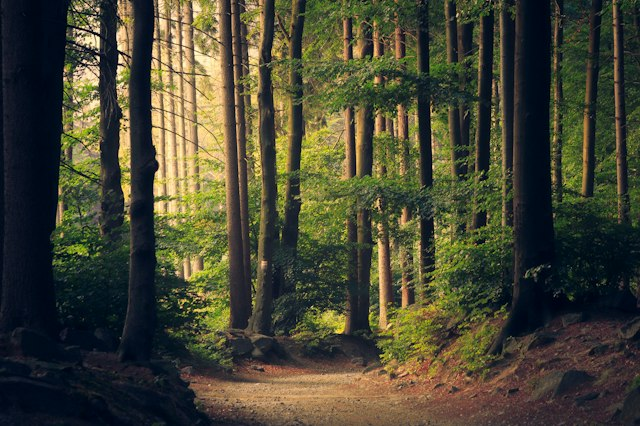
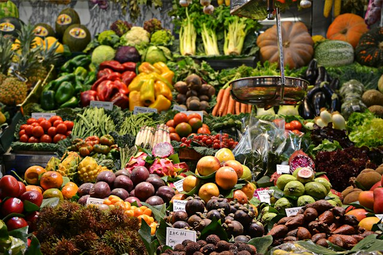
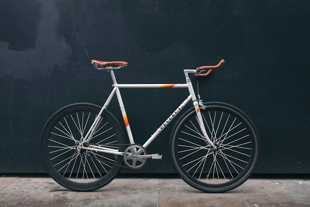
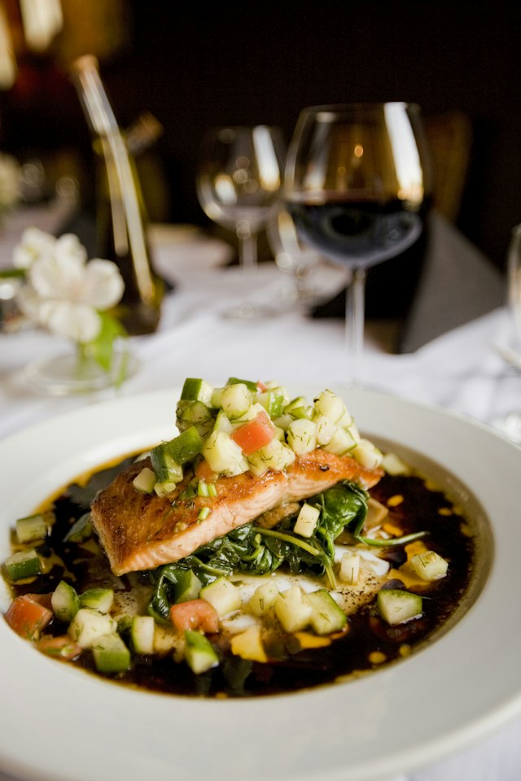
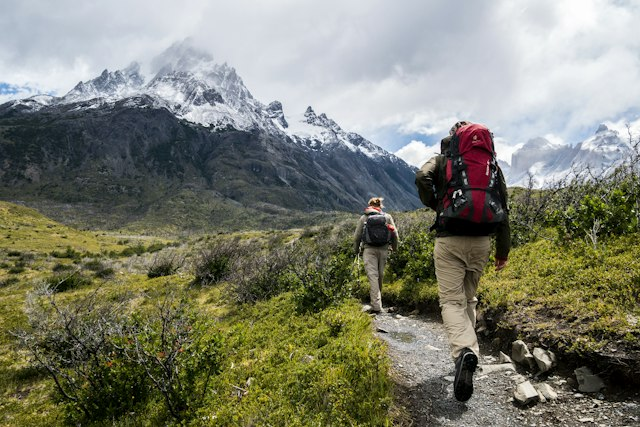
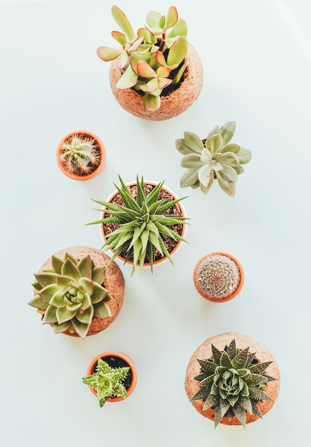

Activity
Weekend Art Circle
A relaxed painting and craft session for beginners.
THE LOCAL DIRECTORY
Search activities and helpful services shared by your community.
Showing all local listings
A relaxed painting and craft session for beginners.

Get simple tips and help to start your own green corner.
Meet local people, exchange ideas, and make new friends.
Friendly learning support for school students.

Start the day with fresh air and a friendly walking group.

Explore homemade food, plants, crafts, and local products.
Draw together outdoors as the sun goes down — all skill levels welcome.

Flat tyres, gears, and brakes fixed by a neighbour who loves bikes.

Bring a dish, share stories, and meet the people on your street.

A guided group hike with stunning views — beginners friendly.

Watering, repotting, and plant advice while you’re away.
Family-friendly film under the stars with popcorn and blankets.
Learn wheel-throwing and glazing in a cosy local studio.
Patient one-on-one help with phones, video calls, and email.
QUICK VIEW
| Day | Activity | Time | Location |
|---|---|---|---|
| Saturday | Weekend Art Circle | 4:00 PM | Community Hall |
| Sunday | Neighbourhood Meetup | 10:00 AM | Riverside Park |
| Sunday | Sunday Local Market | 9:00 AM | Main Square |
| Friday | Sunset Sketching Club | 6:00 PM | Riverside Park |
| Friday | Neighbourhood Potluck | 7:00 PM | Community Hall |
| Saturday | Outdoor Movie Night | 8:00 PM | Main Square |
| Wednesday | Pottery Basics | 6:30 PM | Clay Studio |